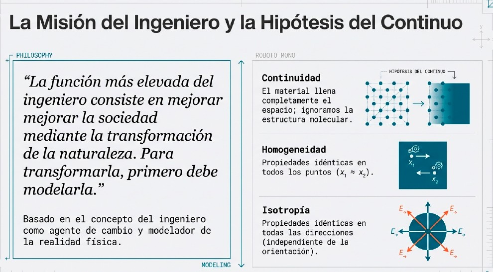
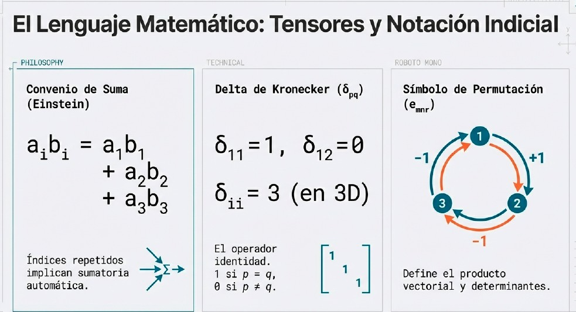
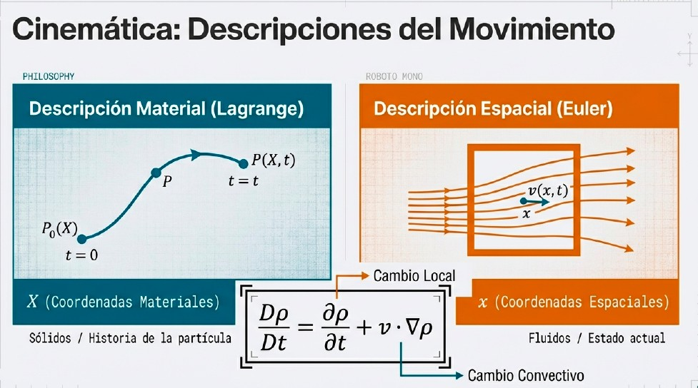
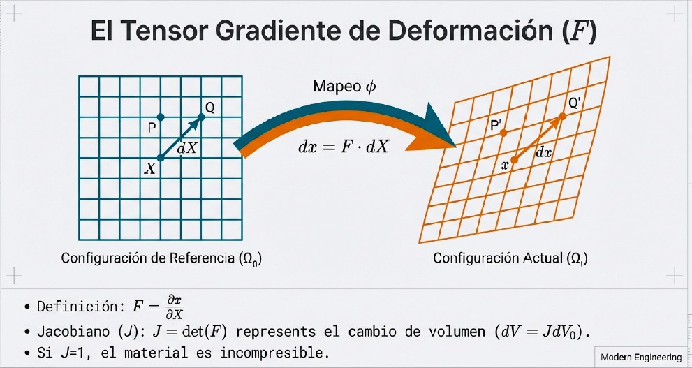
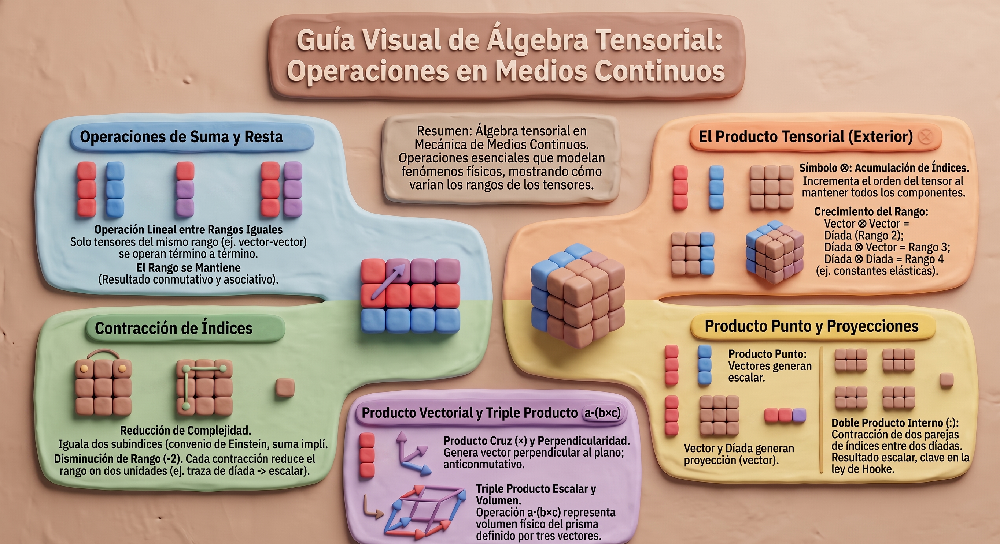
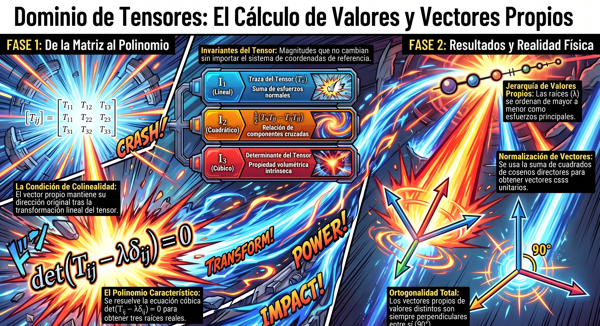

Unidad 1: Fundamentos Matemáticos
Base matemática esencial para el estudio de la mecánica del medio continuo
Contenido de la Unidad
1.1 Notación indicial
Introducción a la notación de índices y convenio de suma de Einstein para simplificar expresiones tensoriales.




En el estudio de los medios continuos tridimensionales, el uso del álgebra elemental clásica puede complicar la representación matemática de los fenómenos. Para evitar expresiones extensas y redundantes, se utiliza la notación indicial, la cual simplifica y unifica la descripción de magnitudes físicas (escalares, vectores y tensores) mediante el uso de subíndices (habitualmente representados por letras minúsculas como \(i, j, k, l, m, n\)).
Clasificación de los índices
En una expresión tensorial, los índices que aparecen en las variables se clasifican en dos tipos fundamentales:
Índices libres
Son aquellos subíndices que no se repiten dentro de un término o monomio. Estos índices determinan el rango (u orden) del tensor y, por ende, el número de ecuaciones o componentes que representa la expresión.
- Rango 0 (escalar): no tiene índices libres (ej. la densidad \(\rho\) o la temperatura \(\theta\)).
- Rango 1 (vector): tiene un único índice libre, como \(a_i\) o \(u_i\), representando 3 componentes en el espacio tridimensional (\(n = 3^1\)).
- Rango 2 (díada o tensor de segundo orden): tiene dos índices libres, como el tensor de esfuerzos \(T_{ij}\) o el tensor de deformaciones \(E_{ij}\), representando 9 componentes (\(n = 3^2\)).
Índices falsos, mudos o repetidos
Son aquellos subíndices que aparecen exactamente dos veces en un mismo monomio. Un índice repetido no aporta al rango del tensor (se contrae) e indica de forma implícita una operación de suma.
2. El convenio de suma de Einstein
Propuesto por Albert Einstein, este convenio es una simplificación del concepto tradicional de sumatoria \(\sum\). La regla fundamental establece que:
«Todo índice que aparezca repetido en un mismo monomio de una expresión algebraica supone una sumatoria implícita con respecto a ese índice.»
Dado que la mecánica del continuo modela el espacio físico tridimensional, la sumatoria se realiza de manera general desde 1 hasta 3.
Ejemplos de desarrollo matemático
Representación de un vector en sus componentes cartesianas
Si multiplicamos las componentes de un vector por los vectores unitarios de la base (\(e_1\), \(e_2\), \(e_3\)), la sumatoria implícita del índice repetido \(i\) genera el vector completo:
\[ a_i e_i = a_1 e_1 + a_2 e_2 + a_3 e_3 \]Producto escalar de dos vectores
El producto punto entre dos vectores \(\mathbf{a}\) y \(\mathbf{b}\) se simplifica al repetir el índice en ambos términos:
\[ a_i b_i = a_1 b_1 + a_2 b_2 + a_3 b_3 \]Combinación lineal simple
La ecuación algebraica \(a_1 x_1 + a_2 x_2 + a_3 x_3 = \alpha\) se reduce elegantemente a:
\[ a_i x_i = \alpha \]Debido a que el índice repetido es «mudo», el nombre de la letra utilizada es arbitrario y se puede sustituir sin alterar el resultado matemático:
\[ a_i x_i = a_k x_k = a_m x_m = \alpha \]Doble sumatoria (tensores de rango superior)
La presencia de dos parejas distintas de índices repetidos en un monomio indica una doble sumatoria (que se extiende de 1 a 3 para cada variable), facilitando la escritura de transformaciones cuadráticas o productos internos de tensores:
\[ a_{ij}\, x_i\, x_j = \sum_{i=1}^{3}\sum_{j=1}^{3} a_{ij}\, x_i\, x_j \]Al desarrollar esta expresión, se genera una suma de 9 términos (\(3 \times 3\)):
\[ a_{ij}\, x_i\, x_j = a_{11}x_1x_1 + a_{12}x_1x_2 + a_{13}x_1x_3 + a_{21}x_2x_1 + a_{22}x_2x_2 + \cdots + a_{33}x_3x_3 \]3. Utilidad y ventajas en la ingeniería
La combinación de la notación indicial y el convenio de Einstein ofrece tres grandes ventajas en el análisis de medios continuos:
- Compacidad: ecuaciones gobernantes extremadamente complejas —como las ecuaciones de equilibrio de Cauchy, las ecuaciones constitutivas elásticas o las ecuaciones de Navier–Stokes— se condensan en una sola línea de texto de fácil lectura.
- Generalidad: permite trabajar de manera directa con tensores de cualquier orden (por ejemplo, el tensor de constantes elásticas de cuarto orden \(C_{ijkl}\)).
- Equivalencia de notaciones: acostumbra al lector y al desarrollador a transitar sin dificultad entre la notación matricial y la vectorial, lo que resulta fundamental para la programación estructurada de algoritmos numéricos en ingeniería.
1.2 Operaciones de tensores
Suma, producto, contracción y otras operaciones fundamentales con tensores de diferentes órdenes.
1. Adición y sustracción (suma y resta)
La suma y la resta son operaciones lineales que se realizan exclusivamente entre tensores del mismo rango.
- Procedimiento: se efectúa término a término (o componente a componente). El tensor resultante conserva el mismo rango que sus predecesores.
- Propiedades: cumplen con la propiedad conmutativa (\(a+b=b+a\)) y la asociativa.
Representación en notación indicial: para dos tensores de segundo orden (díadas) \(\mathbf{T}\) y \(\mathbf{S}\) que dan origen a \(\mathbf{W}\):
\[ T_{ij} + S_{ij} = W_{ij} \]Donde cada componente \(W_{ij}\) es la suma directa de \(T_{ij}\) y \(S_{ij}\).
2. Producto tensorial (o producto exterior)
El producto tensorial (representado por el símbolo \(\otimes\)) permite multiplicar tensores manteniendo todos sus componentes como índices independientes o libres.
Efecto en el rango: al acumularse los índices libres, el rango del tensor resultante es igual a la suma de los rangos de los factores.
Ejemplos de incremento de rango
- Vector con vector (rango \(1 \otimes 1\)): produce una díada o tensor de rango dos (9 componentes): \[ a_i b_j = T_{ij} \quad\Longrightarrow\quad \mathbf{a}\otimes\mathbf{b}=\mathbf{T} \]
- Díada con vector (rango \(2 \otimes 1\)): genera un tensor de rango tres (27 componentes): \[ T_{ij}\, r_k = R_{ijk} \quad\Longrightarrow\quad \mathbf{T}\otimes\mathbf{r}=\mathbf{R} \]
- Díada con díada (rango \(2 \otimes 2\)): genera un tensor de cuarto orden (81 componentes), como el tensor de constantes elásticas \(C_{ijkl}\): \[ M_{ij}\, N_{kl} = R_{ijkl} \quad\Longrightarrow\quad \mathbf{M}\otimes\mathbf{N}=\mathbf{R} \]
3. Contracción de índices
La contracción es la operación que consiste en igualar dos subíndices en un monomio, transformándolos en índices repetidos o mudos.
Efecto en el rango: al generar un índice repetido, se activa una sumatoria implícita (convenio de Einstein) de 1 a 3 en el espacio tridimensional. Esto reduce el rango del tensor resultante en dos unidades por cada pareja de índices contraídos.
Ejemplos fundamentales
- Contracción de una díada (traza): contrae una díada (rango 2) a un escalar (rango 0): \[ T_{ii} = T_{11} + T_{22} + T_{33} = \lambda \]
- Contracción de un producto tensorial: el producto de la díada \(E_{ij}\) con el vector \(a_k\) (rango 3) se contrae al igualar \(j=k\), dando origen a un nuevo vector \(b_i\) (rango 1): \[ E_{ij}\, a_j = b_i \]
4. Productos internos
Los productos internos representan proyecciones y contracciones simultáneas de componentes.
A. Producto punto (vectores)
Para tensores de rango uno, el producto punto o escalar representa la proyección de un vector sobre otro, generando un escalar (rango 0).
Formulación:
\[ \mathbf{a}\cdot\mathbf{b} = a_i b_i = a_1 b_1 + a_2 b_2 + a_3 b_3 \]Es conmutativo: \(\mathbf{a}\cdot\mathbf{b} = \mathbf{b}\cdot\mathbf{a}\).
B. Producto punto vector–díada y díada–vector
Operación de un vector con un tensor de segundo orden para obtener un nuevo vector (rango 1):
- Vector–díada: \(\mathbf{a}\cdot\mathbf{E}=\mathbf{b}\) \(\Longrightarrow\) \(a_i E_{ij} = b_j\)
- Díada–vector: \(\mathbf{E}\cdot\mathbf{a}=\mathbf{c}\) \(\Longrightarrow\) \(E_{ij} a_j = c_i\)
C. Doble producto interno (entre díadas)
Multiplicación que contrae dos parejas de índices de manera simultánea, resultando en un escalar. Se expresa como la traza del producto de las matrices asociadas:
\[ \mathbf{T}:\mathbf{M} = T_{ij} M_{ij} = T_{11}M_{11} + T_{22}M_{22} + T_{33}M_{33} + T_{12}M_{12} + \cdots \]Esta operación es la base para relacionar tensores de cuarto rango con deformaciones (como en la ley de Hooke generalizada):
\[ T_{ij} = C_{ijkl}\, E_{kl} \]5. Producto vectorial (producto cruz)
Esta operación se asocia comúnmente a tensores de rango uno (vectores) y genera un nuevo vector perpendicular al plano definido por los factores.
Formulación:
\[ \mathbf{a}\times\mathbf{b} = \mathbf{c} \]Propiedades: es anticonmutativo (\(\mathbf{a}\times\mathbf{b} = -\mathbf{b}\times\mathbf{a}\)) y su magnitud se define mediante la función seno del ángulo menor \(\theta\) entre los vectores:
\[ |\mathbf{a}\times\mathbf{b}| = |\mathbf{a}|\,|\mathbf{b}|\,\sin\theta \]En notación tensorial, esta operación se simplifica significativamente empleando el permutador o alternador de Levi-Civita (\(\epsilon_{ijk}\)):
\[ (\mathbf{a}\times\mathbf{b})_i = \epsilon_{ijk}\, a_j\, b_k \]6. Operaciones combinadas (triple producto)
Triple producto escalar: representa geométricamente el volumen \(V\) del prisma definido por tres vectores \(\mathbf{a}\), \(\mathbf{b}\), \(\mathbf{c}\):
\[ V = \mathbf{a}\cdot(\mathbf{b}\times\mathbf{c}) = (\mathbf{a}\times\mathbf{b})\cdot\mathbf{c} \]Triple producto vectorial: proporciona identidades de descomposición sobre vectores coplanares:
\[ \mathbf{a}\times(\mathbf{b}\times\mathbf{c}) = (\mathbf{a}\cdot\mathbf{c})\mathbf{b} - (\mathbf{a}\cdot\mathbf{b})\mathbf{c} \]
1.3 Métodos para el cálculo de valores y vectores propios
Técnicas para determinar eigenvalores y eigenvectores, fundamentales para el análisis de esfuerzos y deformaciones principales.
1. Significado físico
- Esfuerzos principales: son aquellos esfuerzos normales puros que actúan sobre planos donde las componentes de esfuerzo cortante son nulas (denominados planos principales).
- Deformaciones principales: representan las deformaciones lineales (alargamientos o acortamientos) puras en direcciones donde las distorsiones angulares se anulan (direcciones principales).
Desde la perspectiva del álgebra lineal, un vector unitario \(\mathbf{n}\) define una dirección principal si, al aplicarle la transformación lineal de un tensor simétrico de rango dos (como el tensor de esfuerzos \(\mathbf{T}\) o el tensor de deformación \(\mathbf{E}\)), el vector resultante mantiene la misma dirección, volviéndose colineal a sí mismo:
\[ \mathbf{T}\,\mathbf{n} = \lambda\,\mathbf{n} \]Donde el escalar \(\lambda\) representa el valor propio (la magnitud del esfuerzo o deformación principal) y \(\mathbf{n}\) es el vector propio correspondiente.
2. Formulación matemática
Empleando la notación de índices y la Delta de Kronecker (\(\delta_{ij}\)), la ecuación de colinealidad se expresa como:
\[ T_{ij}\, n_j = \lambda\,\delta_{ij}\, n_j \]Al agrupar los términos en un solo miembro de la ecuación, se establece un sistema homogéneo de ecuaciones lineales:
\[ \bigl(T_{ij} - \lambda\,\delta_{ij}\bigr)\, n_j = 0 \]Para evitar la solución trivial (donde el vector propio es nulo, \(\mathbf{n}=\mathbf{0}\)), el sistema debe ser compatible indeterminado, lo que exige que el determinante de la matriz de coeficientes sea idénticamente cero:
\[ \det\bigl(T_{ij} - \lambda\,\delta_{ij}\bigr) = 0 \]El desarrollo de este determinante en el espacio tridimensional (\(i,j=1,2,3\)) conduce a una ecuación cúbica denominada polinomio característico:
\[ \lambda^3 - I_1\lambda^2 + I_2\lambda - I_3 = 0 \](Alternativamente expresada con signos opuestos en la literatura de deformaciones como \(-\lambda^3 + I_1\lambda^2 - I_2\lambda + I_3 = 0\)).
Donde los coeficientes \(I_1\), \(I_2\) e \(I_3\) representan los invariantes del tensor, magnitudes escalares que describen propiedades intrínsecas del estado físico y que no varían al modificar el sistema de coordenadas de referencia:
- Primer invariante (\(I_1\) — invariante lineal): equivale a la traza del tensor. \[ I_1 = T_{ii} = T_{11} + T_{22} + T_{33} \]
- Segundo invariante (\(I_2\) — invariante cuadrático): \[ I_2 = \tfrac{1}{2}\bigl(T_{ii}T_{jj} - T_{ij}T_{ji}\bigr) \]
- Tercer invariante (\(I_3\) — invariante cúbico): equivale al determinante de la matriz que representa al tensor. \[ I_3 = \det(T_{ij}) \]
3. Metodología de resolución
Paso 1: obtención de los valores propios (eigenvalores)
Al resolver algebraicamente la ecuación cúbica característica, se obtienen tres raíces reales (propiedad garantizada por la simetría del tensor). Estas raíces se ordenan de manera convencional en escala algebraica decreciente:
- \(\lambda_1\): esfuerzo o deformación principal mayor.
- \(\lambda_2\): esfuerzo o deformación principal intermedia.
- \(\lambda_3\): esfuerzo o deformación principal menor.
Paso 2: obtención de los vectores propios (eigenvectores)
Para encontrar el vector propio \(\mathbf{n}^{(p)}\) correspondiente a cada valor propio obtenido \(\lambda_p\) (para \(p=1,2,3\)), se sustituye dicho valor en el sistema de ecuaciones homogéneo original:
\[ \bigl(T_{ij} - \lambda_p\,\delta_{ij}\bigr)\, n_j = 0 \]Dado que este sistema tiene un determinante nulo, las ecuaciones son linealmente dependientes. Para restringir el número infinito de soluciones y obtener un vector unitario, se introduce la ecuación de normalización (la suma del cuadrado de los cosenos directores es igual a la unidad):
\[ n_i n_i = 1 \quad\Longrightarrow\quad \cos^2\alpha_p + \cos^2\beta_p + \cos^2\gamma_p = 1 \]La solución simultánea del sistema junto con la condición de normalización proporciona las componentes del vector unitario principal \(\mathbf{n}^{(p)}\) (los cosenos directores \(\cos\alpha_p\), \(\cos\beta_p\), \(\cos\gamma_p\)) para cada valor propio.
4. Propiedades fundamentales en el medio continuo
Puesto que tanto el tensor de esfuerzos de Cauchy como el tensor de deformaciones infinitesimales son simétricos y reales por leyes de equilibrio y cinemática, se cumplen de forma rigurosa las siguientes propiedades:
- Eigenvalores reales: las magnitudes de los esfuerzos y deformaciones principales siempre corresponden a números reales.
- Ortogonalidad mutua: los vectores propios asociados a valores propios distintos (\(\lambda_a \neq \lambda_b\)) son mutuamente perpendiculares entre sí, constituyendo una base ortonormal para el espacio físico.
- Representación diagonal: siempre es posible definir un sistema de coordenadas (el sistema principal) bajo el cual el tensor adopta una estructura puramente diagonal: \[ \begin{bmatrix} \lambda_1 & 0 & 0 \\ 0 & \lambda_2 & 0 \\ 0 & 0 & \lambda_3 \end{bmatrix} \]
Casos de multiplicidad de raíces
- Si dos valores propios son idénticos (\(\lambda_1 = \lambda_2 \neq \lambda_3\)), la dirección principal asociada a \(\lambda_3\) es única, mientras que los vectores propios para el valor repetido pueden orientarse en cualquier dirección contenida en el plano ortogonal a ella.
- Si las tres raíces son idénticas (\(\lambda_1 = \lambda_2 = \lambda_3\)), cualquier terna ortogonal en el punto actúa como dirección principal, lo que caracteriza físicamente a un estado de tensor isotrópico (como la presión hidrostática pura).

1.4 Gradiente, divergencia y rotacional
Operadores diferenciales vectoriales esenciales para describir campos escalares y vectoriales en mecánica de medios continuos.
DiapositivaLos operadores diferenciales vectoriales son transformaciones matemáticas fundamentales en la mecánica de medios continuos. Permiten analizar la variación espacial de propiedades físicas representadas mediante campos escalares (como la temperatura, la densidad o la presión) y campos vectoriales (como el desplazamiento, la velocidad o las fuerzas).
Operacionalmente, se estructuran a través del operador nabla (\(\nabla\)), el cual simbólicamente se maneja como un vector de derivadas parciales espaciales:
\[ \nabla = \frac{\partial}{\partial x}\,\mathbf{i} + \frac{\partial}{\partial y}\,\mathbf{j} + \frac{\partial}{\partial z}\,\mathbf{k} \]1. El operador gradiente (\(\mathrm{grad}\) o \(\nabla\))
El gradiente describe la tasa de cambio espacial de un campo en una dirección determinada, afectando directamente el rango del campo al que se aplica.
A. Gradiente de un campo escalar
Se aplica a una función escalar \(f(x,y,z)\) (un tensor de rango cero) y genera un campo vectorial (un tensor de rango uno).
Significado físico: representa la derivada direccional máxima del campo escalar en cualquier punto. El vector resultante apunta en la dirección en la que el campo escalar varía con la mayor proporción. Un ejemplo físico es la trayectoria del agua al escurrir por una montaña, la cual sigue la línea de pendiente máxima definida por el gradiente de altura.
Formulación cartesiana:
\[ \mathrm{grad}(f)=\nabla f = \frac{\partial f}{\partial x}\,\mathbf{i} + \frac{\partial f}{\partial y}\,\mathbf{j} + \frac{\partial f}{\partial z}\,\mathbf{k} \]B. Gradiente de un campo vectorial
Se aplica a una función vectorial \(\mathbf{u}\) para indicar la dirección en la cual el cambio de dicho campo es máximo.
Significado físico: incrementa el rango del tensor en una unidad, produciendo un tensor de segundo orden (díada). Este operador es de vital importancia para calcular incrementos de campos vectoriales mediante la relación:
\[ \mathbf{v} = \Delta\mathbf{u} = \mathrm{Grad}(\mathbf{u})\cdot\Delta\mathbf{r} \]2. El operador divergencia (\(\mathrm{div}\) o \(\nabla\cdot\))
La divergencia evalúa el flujo neto de un campo vectorial a través de la frontera de un volumen infinitesimal.
Significado físico: se aplica exclusivamente a un campo vectorial y produce un campo escalar. Mide la tendencia del campo a la concentración o desconcentración de flujo en cada punto del medio continuo.
Formulación cartesiana:
\[ \mathrm{div}(\mathbf{u})=\nabla\cdot\mathbf{u} = \frac{\partial u_x}{\partial x} + \frac{\partial u_y}{\partial y} + \frac{\partial u_z}{\partial z} \]Interpretación en medios continuos
- Conservación de masa: si el campo vectorial representa el flujo de masa (velocidad por densidad), una divergencia negativa indica convergencia y, por lo tanto, un aumento local de la densidad. Este comportamiento rige la ecuación de continuidad en su descripción espacial: \[ \frac{\partial\rho}{\partial t} + \mathrm{div}(\rho\mathbf{v}) = 0 \]
- Campos tensoriales: el operador se extiende a tensores de segundo orden (como el tensor de esfuerzos de Cauchy \(\mathbf{T}\)), donde la divergencia de una díada reduce su rango a un vector, lo que resulta fundamental en las ecuaciones de movimiento y equilibrio de Cauchy: \[ \rho\mathbf{a} = \rho\mathbf{f} + \mathrm{div}(\mathbf{T}) \]
3. El operador rotacional (\(\mathrm{rot}\) o \(\nabla\times\))
El rotacional caracteriza la tendencia de un campo vectorial a inducir movimientos de rotación en el entorno de un punto.
Significado físico: se aplica a un campo vectorial y genera otro campo vectorial (manteniendo el rango del tensor original). Físicamente, el rotacional detecta y mide la tendencia a girar o rotar como cuerpo rígido dentro del medio.
Formulación cartesiana:
\[ \mathrm{rot}(\mathbf{u})=\nabla\times\mathbf{u} = \Bigl(\frac{\partial u_z}{\partial y}-\frac{\partial u_y}{\partial z}\Bigr)\mathbf{i} + \Bigl(\frac{\partial u_x}{\partial z}-\frac{\partial u_z}{\partial x}\Bigr)\mathbf{j} + \Bigl(\frac{\partial u_y}{\partial x}-\frac{\partial u_x}{\partial y}\Bigr)\mathbf{k} \]Interpretación en medios continuos
- Vorticidad y campo de velocidades: en la mecánica de fluidos, la aplicación del rotacional al campo de velocidades define el vector torbellino o campo de vorticidad (\(\boldsymbol{\gamma}=\mathrm{rot}\,\mathbf{v}\)).
- Flujo irrotacional: si en una región del medio continuo el rotacional del campo de velocidades es idénticamente nulo (\(\mathrm{rot}\,\mathbf{v}=\mathbf{0}\)), se establece que el flujo es irrotacional, lo que permite simplificar la resolución del campo mediante funciones potenciales escalares.
4. Teoremas integrales clave
La modelación de los medios continuos utiliza dos teoremas de integración fundamentales que conectan estos operadores con las fronteras físicas de un volumen de control:
- Teorema de la divergencia (teorema de Gauss): permite transformar una integral de volumen en una integral sobre su superficie exterior utilizando el vector normal unitario \(\mathbf{n}\). Es indispensable para formular los principios de conservación en su forma diferencial local. \[ \int_V \mathrm{div}(\mathbf{u})\,dV = \int_S \mathbf{u}\cdot\mathbf{n}\,dS \]
- Teorema de la integral del rotacional (teorema de Stokes): relaciona la integral de la componente normal del rotacional sobre una superficie abierta con la integral de línea del campo vectorial a lo largo de la curva cerrada \(C\) que la delimita. \[ \int_S \mathrm{rot}(\mathbf{u})\cdot\mathbf{n}\,dS = \oint_C \mathbf{u}\cdot\mathbf{t}\,ds \]
1.5 Teoremas de Green y Stokes
Teoremas integrales fundamentales que relacionan integrales de línea, superficie y volumen.
En la mecánica de medios continuos, los teoremas integrales son herramientas matemáticas esenciales que permiten transitar de manera rigurosa entre las descripciones globales (integrales) y locales (diferenciales) de los principios físicos de conservación. Estos teoremas facilitan la conversión de integrales de línea, superficie y volumen, lo que resulta indispensable para la formulación de las ecuaciones de campo que rigen el comportamiento de los materiales, tales como la conservación de la masa, de la cantidad de movimiento y de la energía.
1. Teorema de Stokes (teorema de la integral del rotacional)
El teorema de Stokes establece una equivalencia entre la circulación de un campo vectorial a lo largo de una curva cerrada y el flujo de su rotacional a través de cualquier superficie abierta que tenga a dicha curva como su contorno o límite.
Significado físico: demuestra que la circulación o «trabajo» acumulado de un campo vectorial \(\mathbf{u}\) a lo largo de una trayectoria cerrada \(C\) es equivalente a la suma de los efectos de rotación local (vorticidad) medidos a través de la superficie \(S\) delimitada por dicha curva. Si el rotacional de un campo es idénticamente nulo (\(\nabla\times\mathbf{u}=\mathbf{0}\)) en una región simplemente conexa, se dice que el campo es irrotacional o conservativo, lo que garantiza que la circulación a lo largo de cualquier trayectoria cerrada es igual a cero.
Formulación vectorial:
\[ \int_S (\nabla\times\mathbf{u})\cdot\mathbf{n}\,dS = \oint_C \mathbf{u}\cdot\mathbf{t}\,ds \]Donde:
- \(\mathbf{u}\) representa el campo vectorial continuo en la región de integración.
- \(\mathbf{n}\) es el vector normal unitario asociado a la superficie abierta \(S\).
- \(\mathbf{t}\) es el vector tangente unitario a la curva frontera \(C\), orientado positivamente en relación con \(\mathbf{n}\).
- \(ds\) (o bien \(d\mathbf{r}\)) representa el diferencial de arco sobre la trayectoria.
Formulación en notación indicial:
\[ \int_S \epsilon_{ijk}\, u_{k,j}\, n_i\, dS = \oint_C u_i\, t_i\, ds \]Donde \(\epsilon_{ijk}\) es el símbolo de permutación o alternador de Levi-Civita y \(u_{k,j}\) indica la derivada parcial de la componente \(u_k\) con respecto a la coordenada espacial \(x_j\).
2. Teorema de Green en el plano
El teorema de Green constituye un caso particular del teorema de Stokes que ocurre cuando la curva cerrada \(C\) y la superficie plana \(S\) que delimita se encuentran contenidas por completo en un plano bidimensional (por lo general, el plano cartesiano \(x_1\)–\(x_2\)).
Significado: permite simplificar una integral de línea sobre una curva cerrada plana traduciéndola en una integral doble sobre la región bidimensional encerrada por la curva.
Formulación matemática:
\[ \oint_C \bigl(u_1\,dx_1 + u_2\,dx_2\bigr) = \int_S \Bigl(\frac{\partial u_2}{\partial x_1} - \frac{\partial u_1}{\partial x_2}\Bigr)\, dx_1\, dx_2 \]Donde \(u_1\) y \(u_2\) representan las componentes del campo vectorial \(\mathbf{u}\) proyectadas sobre los ejes coordenados de referencia \(x_1\) y \(x_2\).
3. Teorema de la divergencia (teorema de Gauss)
Para complementar la transición dimensional en los análisis tridimensionales de los medios continuos, es indispensable vincular las integrales de superficie con las de volumen utilizando el teorema de la divergencia de Gauss.
Significado físico: establece que el flujo neto saliente de un campo vectorial \(\mathbf{u}\) a través de una superficie cerrada \(S\) es idéntico a la integral de volumen de la divergencia de dicho campo sobre la región tridimensional \(V\) encerrada por la superficie. Este principio es fundamental para formular la ecuación de continuidad en su forma diferencial local en un volumen de control:
\[ \frac{d\rho}{dt} + \rho\,\mathrm{div}(\mathbf{v}) = 0 \]Formulación vectorial:
\[ \int_V (\nabla\cdot\mathbf{u})\,dV = \int_S \mathbf{u}\cdot\mathbf{n}\,dS \]Formulación en notación indicial:
\[ \int_V u_{i,i}\,dV = \int_S u_i\, n_i\, dS \]4. Aplicaciones críticas en mecánica de medios continuos
La aplicación de estos tres teoremas integrales permite estructurar de forma robusta las ecuaciones gobernantes de la disciplina:
- Ecuaciones de movimiento de Cauchy (sólidos y fluidos): al realizar el balance de fuerzas que actúan sobre un volumen material, el teorema de Gauss se aplica al tensor de esfuerzos de Cauchy \(\mathbf{T}\) para convertir la integral de las fuerzas de superficie (contacto) en una integral de volumen: \[ \int_S \mathbf{T}\cdot\mathbf{n}\,dS = \int_V \mathrm{div}(\mathbf{T})\,dV \] Esto permite agrupar las fuerzas de cuerpo y aceleraciones en una única integral de volumen, de la cual se desprende la forma diferencial de las ecuaciones de equilibrio y movimiento: \[ \rho\mathbf{a} = \rho\mathbf{f} + \mathrm{div}(\mathbf{T}) \]
- Análisis de vorticidad en fluidos viscosos: en la cinemática de fluidos, la aplicación del rotacional al campo de velocidades define el tensor de vorticidad (\(\boldsymbol{\omega}=\mathrm{rot}\,\mathbf{v}\)). Mediante el teorema de Stokes, la circulación del fluido a lo largo de cualquier contorno cerrado se vincula directamente con la intensidad de los vórtices o líneas de torbellino que atraviesan dicha sección de corriente.